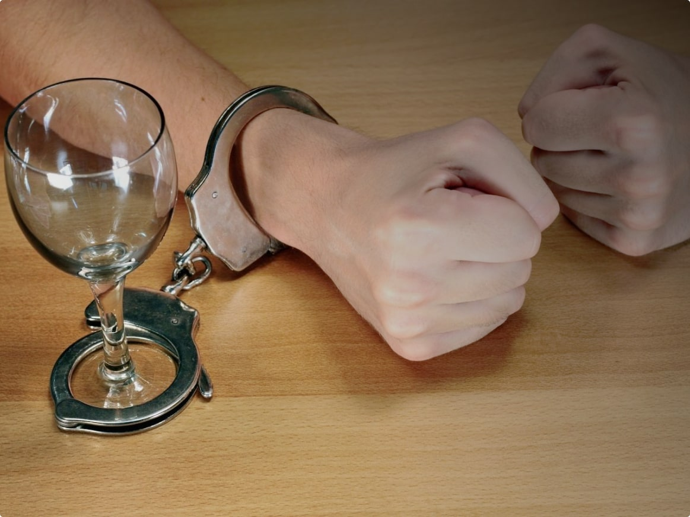

Содержание статьи:

Алкоголизм — это тяжёлое хроническое заболевание, которое требует много сил и времени для избавления. Зависимость разрушительно влияет и на больного, и на всех близких, кто находится рядом с ним.
Что делать родственникам, когда в семье алкоголик, как помочь ему, если он отказывается лечиться? С этими непростыми вопросами поможет разобраться клиника ««Время Решений»». Не оставайтесь со своей проблемой наедине, обращайтесь к нашим врачам, мы гарантируем анонимность и оперативную помощь.
Причины возникновения алкоголизма
Зависимость может провоцировать развитие определённого склада личности, событий, проблем, травм. Для решения проблемы необходимо определить, почему человек принимает спиртное. На развитие алкоголизма обычно влияют несколько факторов.
- Выражение своеобразного протеста. Этим действием человек хочет что-то доказать своим родителям, супруге/супругу, детям или пьёт им назло. Такое случается, когда он не знает, как по-другому продемонстрировать несогласие, показать собственную независимость.
- Слабохарактерность, неумение отстаивать свою точку зрения. Часто мужчины в подобных ситуациях подражают друзьям или знакомым с лидерскими качествами. Зависимые начинают пить в результате общения с теми, кто не может прожить без дозы алкоголя. Тогда любое событие (обычная прогулка, праздник, ремонт автомобиля, рыбалка) заканчивается сильным опьянением, так как человек уже привык расслабляться, выпивая рюмку водки или бутылку пива. Самостоятельно остановиться он не может.
- Депрессивное состояние. Зависимость может быть спровоцирована болезненным событием: увольнением или сокращением на работе, расставанием, потерей квартиры или дома, смертью близких. С помощью алкоголя человек на время отвлекается от своих проблем.
- Скука. Жизнь без увлечений, интересных занятий может спровоцировать алкоголизм. Очередной порцией спиртного человек зачастую заполняет свободное время. Такой вариант развития событий возможен при переезде в другой город, где нет друзей и знакомых, резкой смене образа жизни, после потери работы или выхода на пенсию.
- Конфликты в семье. Это могут быть деструктивные отношения с родителями или другими родственниками, проблемы в браке и с воспитанием детей. Не самая приятная семейная обстановка может повлиять на каждого человека. Нередки ситуации, когда один из членов семьи начинает пить, потому что не получает поддержки дома, а находит её в неблагополучных компаниях.
Поэтому так важно узнать, в чём причина аддикции. При протесте запрещать пить бессмысленно, потому что на любую критику зависимый человек будет отвечать новой порцией алкоголя. Помочь сможет квалифицированный психолог.
Как понять, что родственник зависим от алкоголя
Болезнь подкрадывается незаметно, многие выпивают спиртное по праздникам или особым датам. Не всегда понятно, это уже возникла зависимость или нет. Точный диагноз может поставить только доктор. Если заметили у кого-то из членов семьи негативные признаки, пора обратиться за помощью.
Нужно внимательно смотреть на частоту и количество выпитого алкоголя. Пьёт по выходным или каждый день, но понемногу — это признак развивающегося заболевания. Не имеет значение вид и крепость напитков. Например, употребление около двух литров пива по вечерам или один бокал вина – не важно, важно смотреть на регулярность.
Важную роль играет толерантность (устойчивость) к алкоголю. Как она работает? Алкоголь содержит этанол, вредный для организма. Когда человек только пристрастился к спиртному, его одолевают головная боль, тошнота, рвота, сильное опьянение. Постепенно толерантность возрастает, количество выпитого тоже. Возникает абстинентный синдром (в народе его называют «белая горячка»), обычно проявляется на третьей стадии алкоголизма. Причина появления — организм уже не может существовать без этилового спирта, встроенного в обменные процессы.
Человека тянет похмелиться для снятия неприятных ощущений. Эта привычка чаще всего становится регулярной, чем рискует вызвать тяжёлую алкогольную зависимость.
Ещё один пункт, на который стоит обратить внимание — запой. Это употребление крепких напитков без перерыва на протяжении нескольких дней. Запойное состояние в большинстве случаев циклично: утром — плохое самочувствие, желание выпить, как итог: сильное опьянение. На следующий день схема повторяется. Это не проходит бесследно для организма, возможно появление психических расстройств, тревожности, агрессии, галлюцинаций.
Алкоголизм также меняет личность человека. Сначала они не очевидны для окружающих:
- человек очень раздражителен, испытывает проблемы с гневом, часто не сдерживается;
- сила воли слабеет, пьющий не может не пить, постоянно срывается;
- комплекс вины, низкая самооценка;
- он не может контролировать свои поступки;
- человек обманывает самого себя, родственников, друзей.
Со временем взрослый дееспособный человек принимает функцию ребёнка. На него с большой вероятностью нельзя рассчитывать, он не может взять ответственность ни за что. Алкоголик может стать опасным для окружающих, в любой момент способен проявить агрессию.
В редкие моменты трезвости человек просит прощения и чувствует свою вину за произошедшее. Негативные эмоции провоцируют его снова выпить, чтобы заглушить неприятные эмоции. Самостоятельно зависимый не может выбраться из аддикции. Про них часто говорят: «когда трезвый, он хороший, когда выпьет, сразу меняется».
Безразличие к близким
Почему больной наплевательски относится к своей семье? Этим вопросом часто задаются родственники пьющего человека. Многие зависимые не только не участвует в семейной жизни, но и порой агрессивны к своим близким и ненавидят их. Одна из причин — постепенное разрушение личности из-за злоупотребления спиртным, ненависть направлена на себя и партнёра с детьми.
В ход идут манипуляции своей семьёй, алкоголики могут проявлять сильную агрессию, оскорблять и даже применять физическую силу. Узнать, манипулятор ли ваш родственник с зависимостью, можно по этим симптомам:
- больной в разговоре постоянно перебивает людей, не способен слушать чужие доводы;
- регулярные крики и истерики;
- преувеличивает любую проблему;
- перевоплощение в «милого» и «доброго» человека, если ему что-то нужно от членов семьи;
- алкоголик может надавить на слабые места близких;
- возникает буйность, агрессивность, когда больному не дают деньги на очередную порцию алкоголя;
- постоянное чувство вины со стороны близких.
Избавиться от безразличия зависимого и вернуть его к нормальной жизни ультиматумами и угрозами неэффективно, есть другие действенные способы воздействия. В наркологической клинике алкоголика научат контролировать агрессивное поведение, перестать перекладывать проблемы на других и брать ответственность, поработают над его самооценкой, помогут сформировать новые модели поведения.